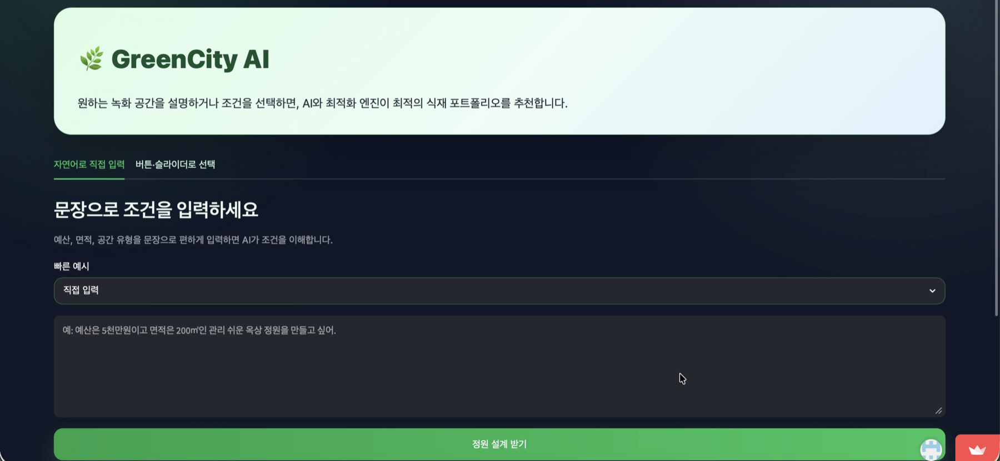
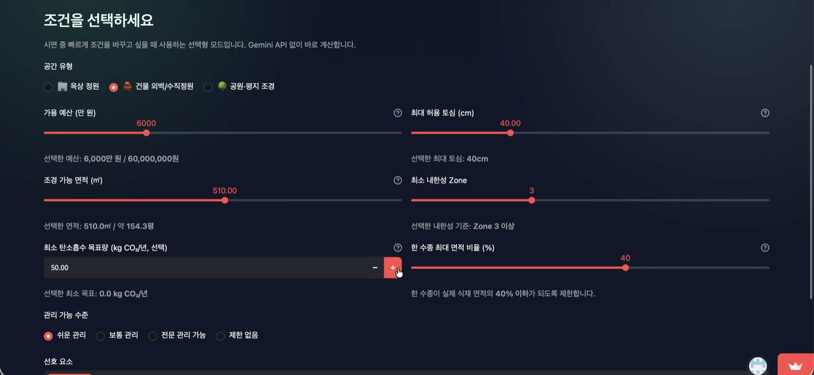
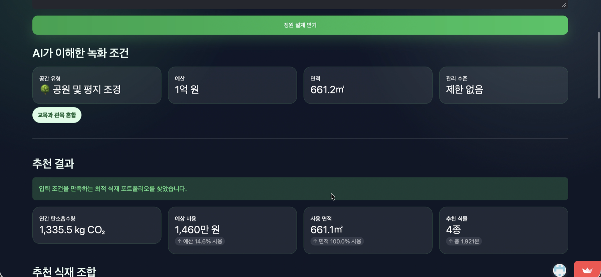
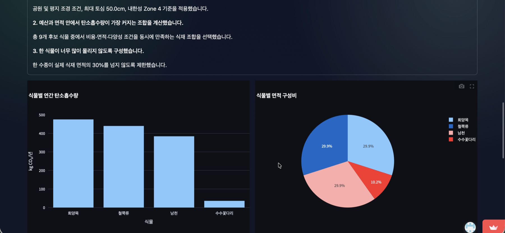
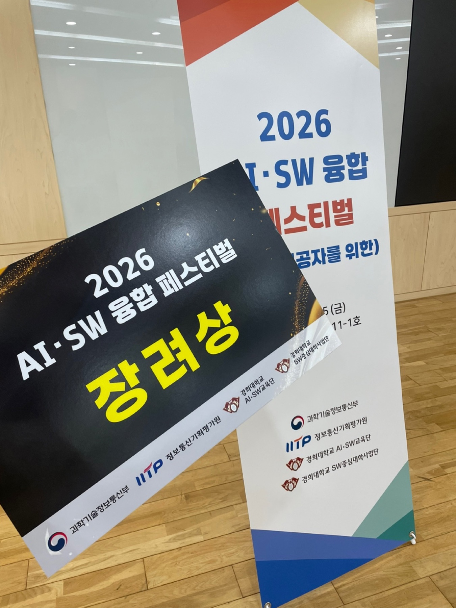

Project visuals
조건을 입력하고,
최적의 녹화를 제안합니다.




도시의 녹화 계획을
데이터와 AI로 설계합니다.
GreenCity AI는 공공 조경 부지의 물리적 조건과 예산 제약을 고려해 탄소 저감 효과를 최대화할 수 있는 최적 식재 포트폴리오를 도출하는 AI 기반 의사결정 지원 모델입니다.
Overview
도시열섬 완화를 위한 AI 기반 녹화 추천 서비스입니다. 2026년 AI·SW 융합 페스티벌 장려상을 수상한 프로젝트입니다.
Problem
기후변화 대응과 탄소중립 실현을 위해 도시 녹지 확대와 공공 조경 사업이 이어지고 있지만, 실제 계획은 담당자의 경험이나 관행에 의존하는 경우가 많습니다. 같은 예산과 공간이라도 수종과 배치에 따라 탄소흡수량과 유지관리 효율이 달라질 수 있어, 탄소 저감 효과를 정량적으로 고려한 계획이 필요합니다.
Research / Background
공공 조경 부지의 물리적 조건과 예산 제약을 함께 고려할 수 있도록 조경 유형, 예산, 면적, 토심, 지역 조건, 관리 난이도와 심미성 선호를 입력 조건으로 다룹니다. 수종별 탄소흡수량, 식재비용, 공간 요구량 등 Plant Master DB의 데이터를 바탕으로 현실적인 후보군과 계획을 도출합니다.
My Role
세부 담당 역할은 확인 후 업데이트할 예정입니다. TODO · 역할 업데이트
Process
사용자가 자연어 또는 버튼·슬라이더로 조경 조건을 입력하면, Gemini API 기반 LLM이 자연어 요구사항을 유지관리 난이도와 심미성 선호도 등의 구조화된 변수로 변환합니다. 이후 Plant Master DB에서 환경 조건을 만족하는 후보 수종을 Hard Constraint Filtering으로 선별하고, 선형계획법 기반 최적화 엔진으로 식재 포트폴리오를 계산합니다.
Solution
선별된 후보군을 대상으로 탄소흡수량을 최대화하면서 예산, 면적, 생태 다양성 제약을 동시에 고려합니다. 최종 결과는 수종별 추천 식재 수량, 예상 탄소흡수량, 예산 사용률과 공간 활용률을 확인할 수 있는 형태로 제공합니다.
Key Features
- 자연어 문장 또는 버튼·슬라이더를 활용한 조경 조건 입력
- 옥상 정원, 건물 외벽·수직정원, 공원·평지 조경 등 공간 유형 선택
- 예산, 면적, 토심, 내한성 Zone, 최소 탄소흡수 목표량, 한 수종 최대 면적 비율, 관리 수준 반영
- 토심·내한성·하중 등 환경 조건을 만족하는 후보 수종 Hard Constraint Filtering
- 추천 식재 수량, 연간 탄소흡수량, 예상 비용, 사용 면적과 식재 구성 시각화
Tech / Method
Gemini API 기반 LLM, Plant Master DB, Hard Constraint Filtering, Linear Programming을 사용합니다. 탄소흡수량 최대화를 목표로 하면서 예산·면적·생태 다양성 제약을 함께 적용하는 방식입니다.
Result
시연 화면에서는 연간 탄소흡수량, 예상 비용, 사용 면적, 추천 식물 수를 한눈에 보여줍니다. 한 사례에서는 연간 탄소흡수량 1,335.5 kg CO₂, 예상 비용 1,460만원, 사용 면적 661.1m², 추천 식물 4종으로 표시됩니다.
기대 효과로는 제한된 예산 안에서 환경적 편익이 큰 식재 포트폴리오를 도출하고, 경험 중심 조경 계획을 데이터·수학적 최적화 기반 의사결정으로 전환하는 것을 제시합니다. 또한 지자체의 탄소중립 정책과 도시 녹화 사업의 객관성을 높이고, 향후 도시 열섬 완화·미세먼지 저감·생물다양성 확보 등으로 확장할 수 있습니다.
What I Learned
프로젝트 회고는 확인 후 업데이트할 예정입니다. TODO · 회고 업데이트